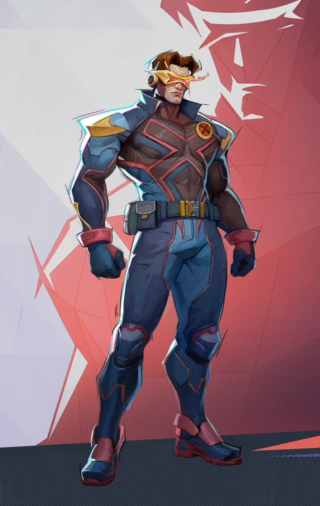

Коротко про герою
Скотт Саммерс набув мютантних здібностей після нещасного винатку. Його лазерний погляд став одним з наймогутніших засобів X-Men. Він є вірним лідером команди і основним тактиком.
Здібності та переваги
- Лазерний погляд - могутні червоні промені енергії
- Боя навичка і тактичне лідерство
- Стратегічне планування
- Відданість команді та меті